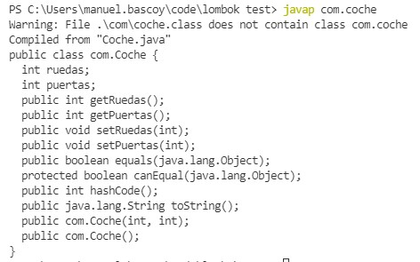

Como utilizar la libreria Lombok para hacer injecciones de codigo y prescindir del boilerplate code
Para utilizar el Lombok con maven tenemos que incluir la siguiente dependencia en el pom.xml:
<dependency>
<groupId>org.projectlombok</groupId>
<artifactId>lombok</artifactId>
<version>1.18.20</version>
<scope>provided</scope>
</dependency>Si queremos utilizar Lombok directamente con el compilador de java javac tenemos que incluir el .jar de lombok en el classplath cuando ejecutemos el compilador
en el siguiente ejemplo tenemos los siguientes archivos
C:.
| lombok.jar
|
\---com
app.java
Coche.javaTenemos en la carpeta del proyecto el archivo lombok.jar y una carpeta com que es donde tenemos el codigo de la applicacion principal y la clase coche (el paquete com).
En este caso para compilar este proyecto lo haríamos con el siguiente comando:
javac -cp lombok.jar com\Coche.java com\app.java
En este caso las etiquetas de inyeccion de codigo estan en la clase Coche, normalmente no necesitaríamos indicar el nombre de la clase al compilar, ya que el propio compilador la incluiría, pero al estar realizando inyeccion de codigo tenemos que indicarla manualmente para que sea compilada
Podemos descargar el archivo lombok.jar desde https://projectlombok.org/
Con Lombok podemos utilizar una serie de anotaciones para inyectar código, algunas de las etiquetas que podemos usar son:
En nuestro ejemplo anterior la clase Coche sería tal que asi:
package com;
import lombok.Data;
import lombok.AllArgsConstructor;
import lombok.NoArgsConstructor;
@Data
@AllArgsConstructor
@NoArgsConstructor
public class Coche{
int ruedas;
int puertas;
}Podemos usar el comando javap para consultar los metodos que se han inyectado en la clase coche:
Otras anotaciones que podemos utilizar son:
ObjectMapper | Jackson | java